Begeleidersinstructie
Hieronder vind je alle opdrachtkaarten in volgorde. Deel tijdens workshop de opdrachtkaarten per opdracht uit aan de groepjes. Neem ze aan het einde van een opdracht weer in en deel dan de kaarten voor de volgende opdracht uit.
Als introductie begin je met een korte presentatie waarin je vraagt/uitlegt wat een robot eigenlijk is. (Een door een computer bestuurde machine met sensoren.) Verder introduceer je de mCore computer, het mBot chassis (met alleen de motoren, wielen, lijnsensor en support-studs voor de mCore voorgemonteerd) en de mBlock-programmeeromgeving. (Een computerprogramma om computerprogramma’s mee te maken.)
Voor hoofdstuk 1 hebben de kinderen alleen de mCore Arduino module nodig en de 2.4G dongle (al in de laptop gestoken).
In hoofdstuk 2 monteren de kinderen eerst de mCore op de mBot. Ze maken dan een programmaatje om de mBot handmatig over het circuit te sturen met de pijltjestoetsen van de laptop.
In hoofdstuk 3 gaan ze de besturing automatiseren door de lijnvolgsensor te gebruiken. Aan het begin van de opdracht moet je even het verschil uitleggen tussen de interactieve modus van de mCore met het -blokje gecombineerd met de 2.4G dongle en de uploadmodus met het -blokje en de USB-kabel.
In hoofdstuk 4 ten slotte monteren de kinderen eerst de ultrasone afstandssensor. Je kunt hiervoor wat uitleg geven door een vergelijking met vleermuizen te maken. Ze breiden vervolgens het programma van de vorige opdracht uit met code om te reageren op een hindernis die zich op het parcours kan bevinden. Een koe die oversteekt?
1. Richtingaanwijzers Maken
Tijd om aan de slag te gaan! We gaan op afstand bestuurbare knipperlichtjes maken met de mCore computer. Dat worden later de richtingaanwijzers van onze robot. Ook leer je in deze opdracht hoe de programmeeromgeving werkt. Dat is een computerprogramma om computerprogramma’s mee te maken… Succes!
1.1. Begin van je programma
| Maak eerst wat meer ruimte op je scherm: Ga naar het menu 'Bewerken' en klik op 'Verberg podium'. De panda verdwijnt nu van het scherm zodat je wat meer ruimte hebt op je werkblad. Zorg dat je links boven het tabje 'Scripts' aangeklikt hebt zodat je het palet met gekeurde blokjes kunt zien. |
Kies uit de blokjescategorie het blokje Sleep dit met je muis bovenin je werkblad. Dit is het startpunt van je eerste programma.
Kies uit de blokjescategorie het blokje 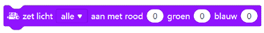 Dat is Engels en betekent zoiets als 'zet de ledjes op de mCore aan met de kleuren rood, groen en blauw'. We gebruiken dit blokje hier om alle ledjes juist uit te zetten, dus laat de waardes hier maar op 'alles' en '0' staan. Sleep het blokje onder het vorige blokje zodat het vast klikt.
Kies uit de blokjescategorie het blokje en sleep dit onder het vorige blokje.
Kies uit de blokjescategorie het blokje  en sleep dit in het vorige blokje, achter het woordje 'tot'.
en sleep dit in het vorige blokje, achter het woordje 'tot'.
Kies uit de blokjescategorie het blokje en sleep dit onder het 'herhaal tot'-blokje.
1.2. Resultaat
Je hebt als het goed is nu dit:
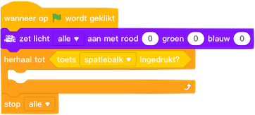
Dit lijkt misschien niet veel soeps, maar eigenlijk is dit de belangrijkste structuur van je programma. Van ieder computerprogramma eigenlijk:
Ieder computerprogramma heeft:
- Startblok
-
Hier begint je programma altijd. Bij ons is dat het blokje
Door er met je muis op te klikken, start je het programma. - Initialisatieblok
-
Hier worden eenmalig belangrijke dingen klaargezet voor het programma.
Bij ons zetten we hier alle ledjes uit met het blokje - Hoofdlus
-
Alles in de hoofdlus wordt telkens opnieuw uitgevoerd door je programma.
Dat is bij ons alles binnen het blokje en is nu dus nog leeg… - Stopconditie
-
In onze hoofdlus staat: 'herhaal tot toets spatie ingedrukt'
Wanneer je dat doet, ga je uit de hoofdlus. Maar daarna komt er niets meer, dus stopt het programma.
Onze stopconditie is dus het blokje - Eindblok
-
Hier zet je alles weer terug zoals het stond vlak voordat je programma begon. Dus ledjes en motoren weer uitzetten bijvoorbeeld. Bij ons is dit het blokje
Laten we gauw beginnen met dingen maken voor in onze hoofdlus!
1.3. Linker richtingaanwijzer
Ik denk dat je wel is opgevallen dat de blokjes binnen iedere blokjescategorie allemaal dezelfde kleur hebben. Da’s handig om ze makkelijker te vinden. Probeer het maar eens: Bouw het volgende stukje programma maar na en let goed op de kleurtjes. Je snapt nu in welke blokjescategoriëen je ze moet zoeken.
| Let op: het getoonde 'als-dan'-blok lijkt op onze hoofdlus, maar is het niet! Je moet een nieuw blokje pakken en dat komt straks in de hoofdlus! |
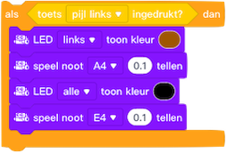
Het resultaat mag je even los op je werkblad laten staan, dus nog niet vast klikken in de hoofdlus.
1.4. Rechter richtingaanwijzer
Maak nu het stukje programma voor de rechter richtingaanwijzer. Dat is bijna hetzelfde als de linker: alleen de pijltjestoets waarop je moet drukken en het ledje dat aan moet gaan zijn anders.
|
Je kunt de linker richtingaanwijzer ook kopiëren en alleen de toets en het ledje veranderen: druk op het knopje helemaal bovenin het scherm, rechts naast de tabjes 'Scripts', 'Kostuums' en 'Geluiden'. Je muiscursor verandert dan in een stempeltje. Klik op het woordje 'als' van je linker richtingaanwijzerprogrammaatje. De kopie versleep je nu een stukje naar beneden en pas aan wat nodig is. Handig! |
Als het goed is, heb je nu dit blok erbij gemaakt:
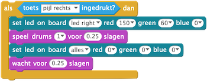
1.5. Onderdelen samenvoegen
Je hebt nu drie onderdelen op werkblad. Je kunt nu de twee blokken van de linker- en rechter richtingaanwijzer aan elkaar klikken en dan het geheel in de hoofdlus plaatsen, het 'herhaal tot…' blok
1.6. Resultaat
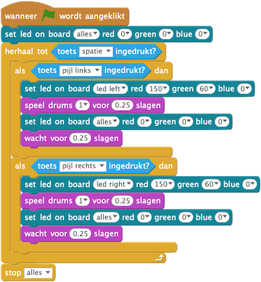
1.7. Testen
Tijd om uit te proben! Zet de mCore-computer aan. Dat doe je met het zwarte schuifknopje aan de zijkant. Maak verbinding met je laptop. Dat doe je zo:
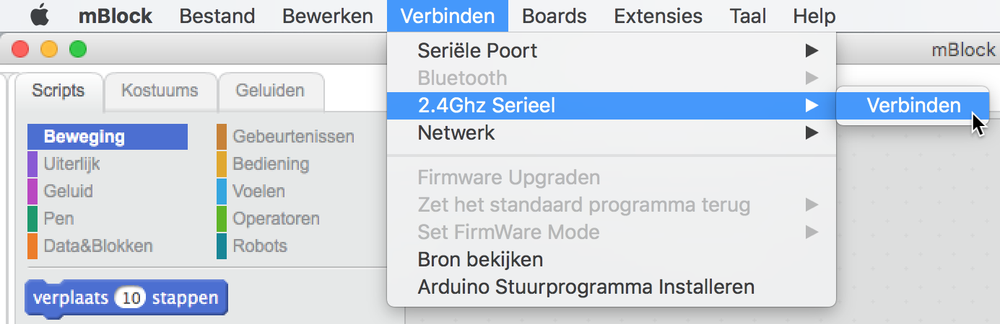
Wanneer je hierna op het hoedje met het groene vlaggetje klikt, gaan de LED-jes op de mCore-computer uit. Druk dan nu maar eens op de pijltjestoetsen. Wat gebeurt er?
Druk daarna op de spatiebalk. Zie je wat er gebeurt op het scherm? En met de mCore?
Zelf verzinnen
Het geluid dat je richtingaanwijzers maken, wordt bepaald door de blokjes. Kies een leuk geluid door de waarde voor 'drums' aan te passen.
De tijd dat je richtingaanwijzers aan of uit zijn, wordt bepaald door de waardes in de 'voor…slagen' vakjes in de blokjes en Probeer een paar andere waardes uit.
1.8. Klaar!
Gefeliciteerd! Je hebt je eerste mCore programma geschreven!
2. Jij Bestuurt de Robot
In deze opdracht gaat de robot eindelijk bewegen! Je gaat van je computer een soort afstandsbediening maken waarmee je de robot naar voren en achter kunt laten rijden, en echt kunt sturen. En stoppen natuurlijk.
2.1. De computer monteren
Allereerst ga je het mCore-computertje op de mBot schroeven. En de stekkertjes op de goede plaats aansluiten. Maar let op: wanneer je per ongeluk een schroefje of de schroevendraaier op de mCore laat vallen kun je kortsluiting maken. Dat is niet gevaarlijk voor jou, maar wel voor het computertje. Hij kan stuk gaan.
| Zet eerst het mCore-computertje uit voordat je verder gaat. Dat doe je met het zwarte schuifknopje aan de zijkant. Als alle ledjes uitgaan, is het goed. |
Plaats nu het computertje met de schroefgaatjes precies boven de metalen buisjes. Draai de schroefjes één voor één paar slagen vast, maar draai ze nog niet helemaal aan. Dat doe je pas als alle schroefjes erin zitten.
| Als je met z’n tweeën bent, kan één van jullie mooi de mCore op zijn plek houden en de ander de schroefjes vastdraaien! |
2.2. De kabeltjes aansluiten
Sluit eerst de kabeltjes van de motoren aan. Dat zijn de dunne wit-zwarte kabeltjes met het rode en zwarte connectortje. Let op de kleurtjes: rood moet op rood, zwart op zwart.
Sluit nu het kabeltje van de lijnsensor aan aan. Dat is het brede zwarte kabeltje met de doorzichtige stekker. Steek het stekertje in poort nummer 3. Druk het aan totdat je 'klik!' hoort.
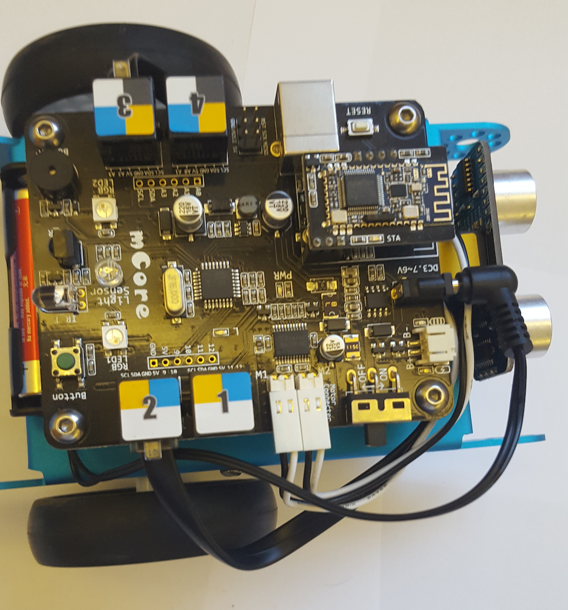
2.3. Vooruit en achteruit rijden
We gaan de robot laten rijden! Volg onderstaande stappen:
Maak het volgende stukje programma na en plaats het gewoon los op het werkblad, naast je programma van de vorige opdracht:

Kopieer het stukje programma van de vorige stap. Weet je nog hoe dat moet?
Gebruik het -knopje. Klik de kopie onder het stukje programma van stap 1 vast.
Pas de toets en de rijrichting van één van de twee nieuwe programmablokjes aan. Plaats vervolgens het geheel in het programma dat je al had van de vorige opdracht. Plaats de nieuwe blokjes precies onder de bestaande 'als…dan'-blokjes.
2.4. Resultaat
Je programma ziet er dan zo uit:
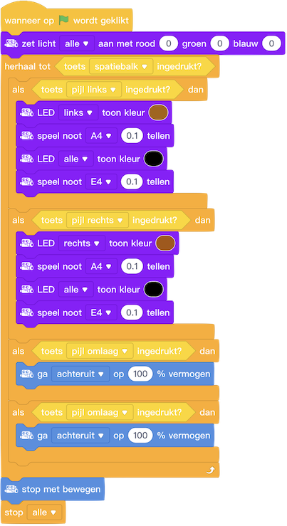
2.5. Testen
Start je programma en kijk wat er gebeurt als je op de verschillende pijltjestoetsen drukt. Pas op dat de robot niet van de tafel af rijdt!
| Druk op de spatiebalk om het programma en de robot te laten stoppen! |
Zelf verzinnen
Je merkt dat de robot laten stoppen niet zo handig gaat: Je moet nu het hele programma laten stoppen om ook de robot te laten stoppen. Hoe kun je er voor zorgen dat de robot wel stopt met rijden maar niet het hele programma stopt?
Voeg een extra 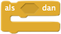 -blokje toe met in het 'als'-vakje een blokje dat naar een toets luistert. Bijvoorbeeld de 's'-toets (van 'stoppen'). Laat in het 'dan'-vakje de motoren stoppen. Probeer zelf te bedenken hoe dit moet.
2.6. Een betere manier om te stoppen
Het werkt best aardig als we de robot naar een extra stop-knop laten luisteren. Maar eigenlijk is het veel makkelijker als de robot gewoon meteen stopt als je de pijltjes toets weer loslaat. Nu heb je we wel een -blokje maar er bestaan geen 'toets…niet ingedrukt'-blokjes, maar zoiets kunnen we wel zelf maken:
Neem eerst het -blokje los dat je in de laatste opdracht gemaakt hebt om de mBot te laten stoppen. Gooi maar weg, want we gaan het anders doen.
Kies uit de blokjescategorie het blokje en plaats hierin uit dezelfde blokjescategorie een -blokje.
Kies uit de blokjescategorie twee -blokjes en pas de tekst
aan naar 'pijl omhoog' en 'pijl omlaag'. Plaats de blokjes in de vakjes van het -blokje.
Kies uit de blokjescategorie een blokje en plaats hierin het 'niet'-blokje. Je hebt nu dit:
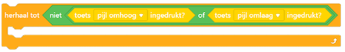
Neem nu uit het bestaande programma de twee 'als-dan'-blokjes los die de robot naar voor en achter laten gaan. Plaats deze in het 'herhaal-tot'-blok van de vorige stap. Plaats nu een -blokje onder het 'herhaal-tot'-blok. Dit laat de motoren stoppen wanneer de pijltjes toetsen niet worden ingedrukt. Je hebt nu dit:
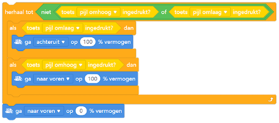
Zelf verzinnen
Kun je zelf bedenken hoe dit werkt? Probeer het aan elkaar uit te leggen.
Plaats het blok terug in het programma. Weet je waar het moet komen?
2.7. Resultaat
Als het goed is ziet je programma er nu zo uit:
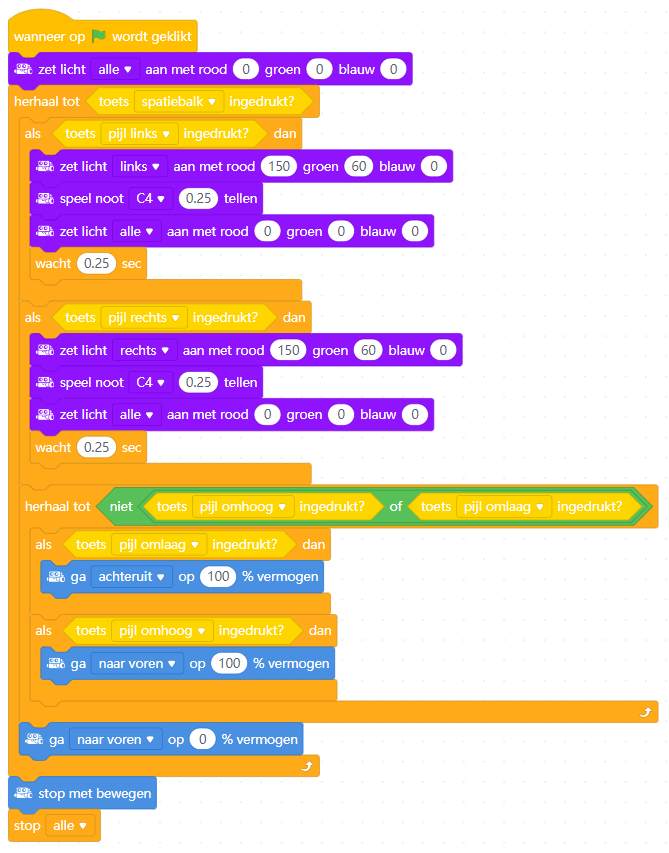
2.8. Testen
Start je programma en kijk wat er gebeurt als je nu de pijltjestoetsen drukt, vooral de omhoog- en omlaagtoetsen natuurlijk. Als het goed is, gaat de robot naar voor en achter rijden als je op deze toetsen drukt. En stopt vanzelf als je ze weer loslaat! Als het niet werkt, kijk dan goed naar je programma en probeer te bedenken waarom niet. Als je er zelf niet uitkomt, mag je natuurlijk een begeleider vragen om mee te kijken.
2.9. Naar links en rechts sturen
Nu nog sturen! Als je op de pijltjes naar links of rechts drukt gaan wel de richtingaanwijzers aan, maar de mBot slaat nog niet links- of rechtsaf. Dat ga je nu maken.
Maak precies zo’n blok als in stap 4 van de vorige opdracht, maar dan voor links en rechts in plaats van naar boven en naar beneden:
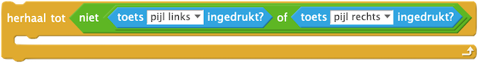
Neem nu uit het bestaande programma de twee 'als-dan'-blokjes los die robot naar links en rechts laten gaan. Plaats deze in het 'herhaal-tot'-blok van de vorige stap. Je hebt nu dit:
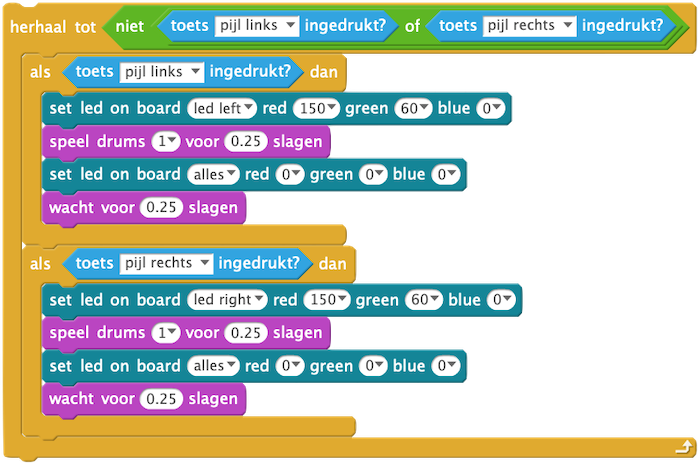
Plaats nu dit hele 'herhaal-tot'-blok boven het al aanwezige 'herhaal-tot'-blok.
2.10. Vereenvoudigen
Ons programma is nu best wel groot geworden, vind je niet? Dit kan wel ietsje korter. Als je goed kijkt zie je dat deze blokjes precies hetzelfde zijn bij links en rechts sturen:
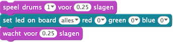
Omdat deze blokjes in beide gevallen uitgevoerd moeten worden hoeven ze eigenlijk helemaal niet binnen de -blokjes te staan. Niks 'als', ze moeten 'altijd' uitgevoerd worden! Dit kun je zo doen:
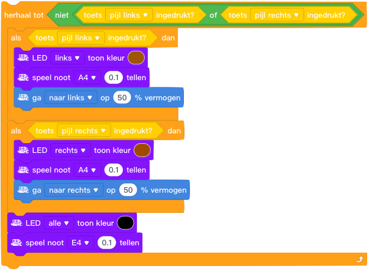
2.11. Eind resultaat
Top! Het programma is nu klaar. Als het goed is, ziet het er zo uit:
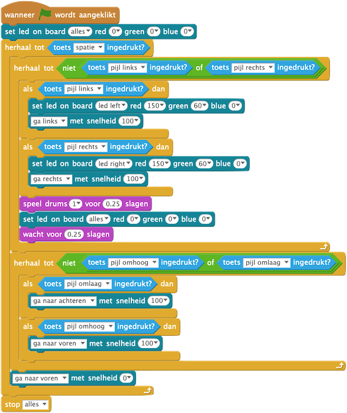
Probeer je robot eens over de plattegrond die je van de begeleiders krijgt te laten rijden. Probeer om netjes de zwarte lijn te volgen. Lastig hè?
3. Arduino mode
In de vorige opdrachten heb je je laptop als een soort afstandsbediening gebruikt. We gaan nu kijken hoe je je robot zelf z’n gang kan laten gaan.
3.1. Machine Code bekijken in Arduino mode
We maken onze Scratch programma’s in het computerprogramma 'Makeblock'. Als je je programma start, draait jouw Scratch programma eigenlijk binnen Makeblock. Makeblock vertaald iedere Scratch opdracht in een machine taal instructie en stuurt die één voor één naar de mBot.
Een opdracht als vertaald Makeblock bijvoorbeeld naar:
ff 55 07 00 02 05 9c ff 64 00
zelf uitproberen
In Arduino mode kunnen we precies zien welke machine codes Makeblock naar je mBot stuurt! Maak dit programmaatje:
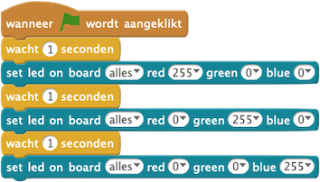
Open vervolgens 'Arduino mode':
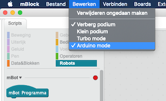
Start het programma. Kijk goed naar de uitvoer rechts onder op je scherm. Dit is de machine code die makeblock naar je mBot stuurt. Kun je ontdekken wat het verschil is tussen de machine codes voor rood, groen en blauw?
3.2. Uploaden in Arduino mode
Wanneer je laptop in 'afstandsbediening modus' verbonden is met de mBot, dan stuurt Makeblock de Scratch blokjes dus één voor één naar je mBot, vertaald in machine code. En in Arduino mode kun je dus zien hoe die machine codes eruit zien, en op welk moment ze verstuurd worden.
Het nadeel hiervan is dat je laptop verbonden moet zijn met de mBot, en je programma in Makeblock moet draaien. Wat we eigenlijk willen, is dat we ons Scratch programma in zijn naar de mBot sturen en op de mBot zelf draaien. Uploaden noemen we dat. Je kunt dan de verbinding met je laptop verbreken of de laptop zelfs uitzetten, en dan nog kan de mBot gewoon je programma blijven draaien, zonder hulp. Uploaden doen we ook vanuit Arduino mode.
In het witte vlak boven het grijze vlak waar je de machine codes voorbij zag komen zie je allemaal engelse woorden staan en veel haakjes enzo. Daar komt straks ons Scratch programma te staan in de taal C++. Ziet er ingewikkeld uit, vind je niet? Gelukkig hoeven we niks zelf te bedenken van wat daar staat. Dat doet Makeblock voor ons. Kijk maar:
zelf uitproberen
Zoek in de blokjes categorie het -blokje en sleep dit boven je programmaatje. Vervang het -blokje hiermee en kijk ondertussen naar wat er rechts op het scherm gebeurt met het C++ programma. Zag je wat er gebeurde?
Wanneer je dus je Scratch programma begint met het dan vertaald Makeblock het naar een C++ programma. Dat C++ programma kan vervolgens in zijn geheel omgezet worden naar machinetaal en uploaded worden naar de mBot Dat doe je met het 'Upload naar Arduino'-knopje bovenin je scherm:
zelf uitproberen
Zorg dat de USB kabel aangesloten is, de serieele poort in makeblock verbonden is en druk dan op het 'Upload naar Arduino'-knopje. Kijk wat er allemaal gebeurt op je scherm.
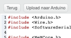
Als alles klaar is staat er zoiets onderaan je scherm:
avrdude: verifying ... avrdude: 6570 bytes of flash verified
avrdude done. Thank you.
Neem nu de USB kabel los en zet de mBot uit en weer aan. Wat gebeurt er?
4. De Robot Kan Zelf Sturen!
In deze opdracht gaat de robot zelf bewegen! Je gaat dus niet meer je computer als afstandsbediening gebruiken, maar je robot gaat echt zelf z’n gang. Als dat maar goed gaat!
4.1. De lijnvolg module
Als je de mBot omdraait zie je aan de voorkant de lijnvolg module zitten. De lijnvolg module bestaat uit twee infrarood sensoren: Eentje links en eentje rechts. Beide sensoren hebben een infra rood ledje en een infra rood detector.
| Infra rood licht is super donker rood licht. Het wordt ook wel warmtestraling genoemd. Wij kunnen we het niet zien, maar sommige dieren wel. Ratelslangen bijvoorbeeld kunnen in het donker heel goed een vogeltje of muis zien: De warmte van hun lijfjes is voor de slang namelijk zichtbaar als infra rood licht… |
De ledjes van de sensoren stralen infra rood licht. Als de mBot over een licht opervlak rijdt, zoals wit papier, dan reflecteerd dat het infra rode licht en ziet de detector dat. Deze geeft dan een signaaltje aan de mBot. Een donker opervlak zoals een zwarte lijn reflecteerd geen licht. De detector ziet dan niks en geeft dus ook geen signaaltje aan de mBot.
De signaaltjes van de twee sensoren (of juist het ontbreken ervan) wordt door de mBot gecombineerd tot een getal:
4.2. Sturen met de lijnvolger module
We gaan de lijnvolger gebruiken om de mBot zelf de plattegrond rond te laten rijden. Dus zonder dat je zelf hoeft te sturen!
Maak variabelen 'lijnwaarde' en 'richting':
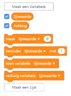
In de eerste opdracht hebben we de basis elementen van ieder programma genoemd. Herken je ze? Weet je nog hoe ze heten?
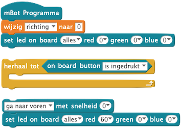
We lezen het getal van de lijnvolg module telken opnieuw uit in onze hoodlus en slaan deze op in de variabele 'lijnwaarde'
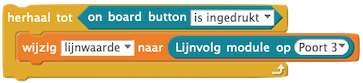
Naar voren rijden is het makkelijkste: Op je blaadje zie je dat als de mBot precies op de lijn is, de sensor de waarde '0' heeft. Dan rijden we dus rechtdoor. Het LED-blokje is om de richtingaanwijzers uit te zetten.
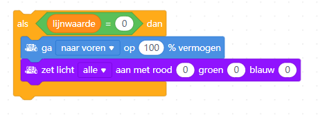
Kopieer het 'rechtdoor'-blok uit de vorige stap twee keer: Eentje voor linksaf en eentje voor rechtsaf.
Bedenk nu zelf met behulp van je blaadje hoe je beide blokjes moet aanpassen. Vergeet de LED-jes voor de richting aanwijzer niet!
Het veiligste om te doen als de mBot de lijn helmaal niet ziet is om te stoppen. Kopieer nog een keer het 'rechtdoor'-blok en pas het aan.
4.3. Spiek blaadje: Rechtdoor, links, rechts
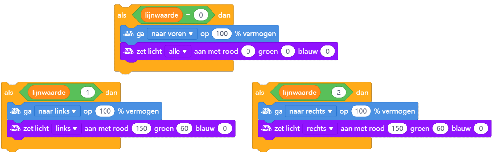
4.4. Uitproberen!
Tijd om te kijken of het werkt:
-
Klik alle deel-blokken in elkaar
-
Zet Makeblock in Arduino mode
-
Sluit de USB kabel aan
-
Zet de mBot op een wit stuk van de 8-baan
-
Upload je programma
Wanneer de upload klaar is trek je de USB kabel uit de mBot. Daarna duw je hem voorzichtig op het parcours.
4.5. Spiek blaadje: Eindresultaat

4.6. Soms raakt de mBot de lijn kwijt..
-
Hoe komt dat denk je?
-
Kun je zien wat hij deed vlak voordat hij de lijn kwijt was?
-
Wat kun je eraan doen?
5. De Ultra sone sensor module
Met de ultra sone sensor kan de mBot afstand meten tot een voorwerp dat voor hem staat. De sensor zend geluidjes uit. Die weerkaatsen tegen het voorwerp en het duurt eventje voor ze weer terug zijn: een hele korte echo eigenlijk. De tijd die dat duurt geeft aan hoe ver weg het voorwerp is.
| Ultrasoon geluid is geluid met een heel hoge toonhoogte. Zo hoog dat geen mens het meer kan horen. Maar somige dieren wel. Een vleermuis bijvoorbeeld. Die doet precies wat de mBot ook doet: Hele hoge gilletjes maken en luisteren hoe lang het duurt voordat de echo van zijn eigen gilletje weer terug is. Vleermuizen kunnen dat zo goed dat ze zo vliegjes in het stikke donker kunnen vinden en opeten! 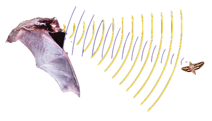 |
Voeg het volgende blok toe aan de hoofdlus onder het laatste lijnvolger blok:
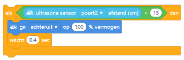
Upload je programma weer en probeer het uit!
Unresolved directive in index.adoc - include::opdracht-kaarten/05_afstandssensor.adoc[]